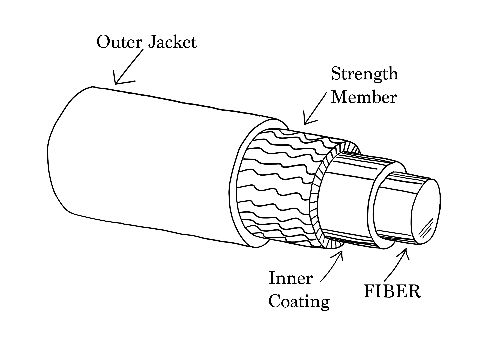
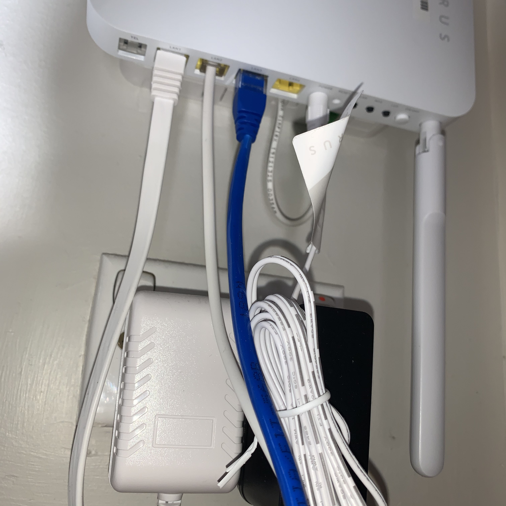

Single Fiber Cable
One mode of light travels and reflects through the core. It has a small diametral core. Signals are able to travel further.

Multimode Fiber Cable
Like, fiber this allows the light pass through the cable. It has a large diameter and allows more types of data to be transmitted.

Ethernet Cable
This is the most common type of networking cable. This cable connects wired devices within the home on a local network and enables file sharing and internet access.

Location
Ethernet cable attached to a home wifi router in Karori.